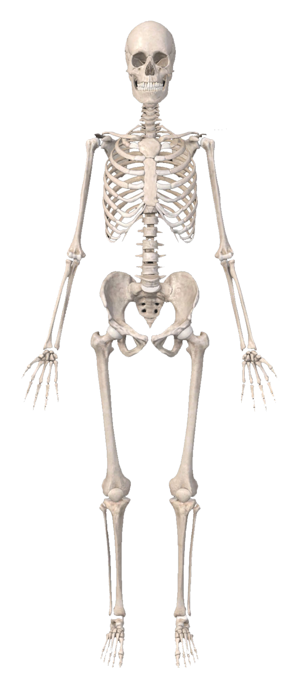
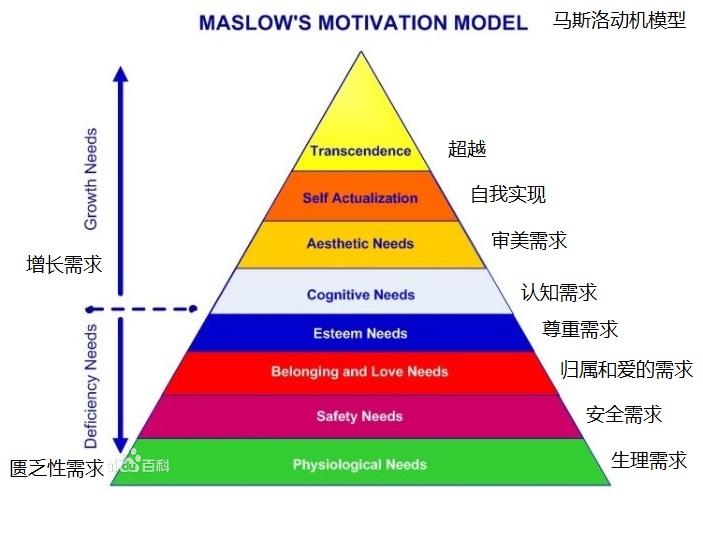

姓名有名的人
年龄出生等级
- 0
- 8
- 16
- 24
- 32
- 40
- 48
- 56
- 64
- 72
- 81
主要经历
- 第8949天
- 第8950天
- 第8951天
- 第8952天.....
- 秋天中成长的我
- 家庭中生活的我
- 学校中上学的我
- 公司中工作的我
- 网络中娱乐的我
- zz24级写给27级的内心十万字
我习惯在玩累了手机小说电脑游戏之后睡觉，醒来或者是普通放假时间，或者是上学日，或者是工作日
住过不同地方，
在新手村一般过年时候，配老爸老妈回家看奶奶伯伯等亲人，醒了一般9点以后，不用锻炼，不用做饭，不用工作，每天只是玩电脑手机的日子。
在练级区一，需要赶校车上学
一份身体肌肉力的人
性别，身高，腰围，手长，体重，体脂，肌肉，神经反应

一个头脑心念力的人
以后的你实现现在的我的梦想了吗？没有的话快去做。起初只是一次简单的晚睡，熬夜<--入睡点，休息时长思路脑力念头，3个/秒，关注点思考点念头点，睡醒点-->
<--起床点，运动时长效率体力动作，1个/秒，肌肉力心肺力耐久力，上床点-->

宇宙
 xxx，xxx，太阳系，地球，亚洲大陆,无生命物，植物，动物，人类，祖宗，家族，家庭，个体
xxx，xxx，太阳系，地球，亚洲大陆,无生命物，植物，动物，人类，祖宗，家族，家庭，个体
,大大世界，中国城市区域,户籍,军事，农业，医疗
人口数，资源数，行业数，技能数
隐蔽屋12345678-20240717
装备/
- 头帽，眼镜
- 外衣，上衣
- 裤子，内裤
- 鞋子，袜子
背包/
- 钥匙
- 证件
家具/
- 厨房
- 厕所
- 门口
- 卧室
- 书桌
- 阳台
- 衣柜
仓库/
行李箱，收纳箱，收纳箱，收纳箱，收纳箱我要做一个有智慧的人，日知知日，学生学问。彗心慧心，存好心做好人做好事。 人走在道路上，首先要确定的是方向和目标，然后是交通规则规律，最后是边界和底线。
旧的目标
正确方法
新的指标
开始时间
工作进度
00 01 02 03 04 05 06 07 08 09 10 11 1 24 1440 86400 作息 身体 家务 学识 工作 娱乐结束时间
我要做一个规律作息的人
1.作息规划
休息时间
工作时间，形正体松，起手式预备式收手式，
手肘肩脚膝跨头舌眼嘴下巴
闻花法吹蜡烛法胸腹式联合呼吸
20250618作息表
我要做一个每天运动的人
2.身体管理
吃饭、
补水、
锻炼、
洗漱
3. 家务管理
整理、
清洁、
58KG
10个/组，2，3，4，5，6，7，8，9，10组
1练/1天，2练/2天，10练/10天
我要做一个整齐家务的人
存放物品
我要做一个每天学习的人
4. 学习成长
思想、技术、等（其他领域学习）
中国历史
中国思想
学科目录
职业分类大典
渐构
拼音发音
新华字典
播音训练
运动训练
系统解剖
膳食营养
卓叔增重
燃脂塑形
冥想
中医气功
中原武术
我要做一个工作认真的人
5.职业发展
行业、
岗位
简历、
流程
我要做一个玩法厉害的人
6.休闲娱乐
视频、
直播、
游戏、
音乐、
小说、
漫画、
电影、
综艺、
电视剧